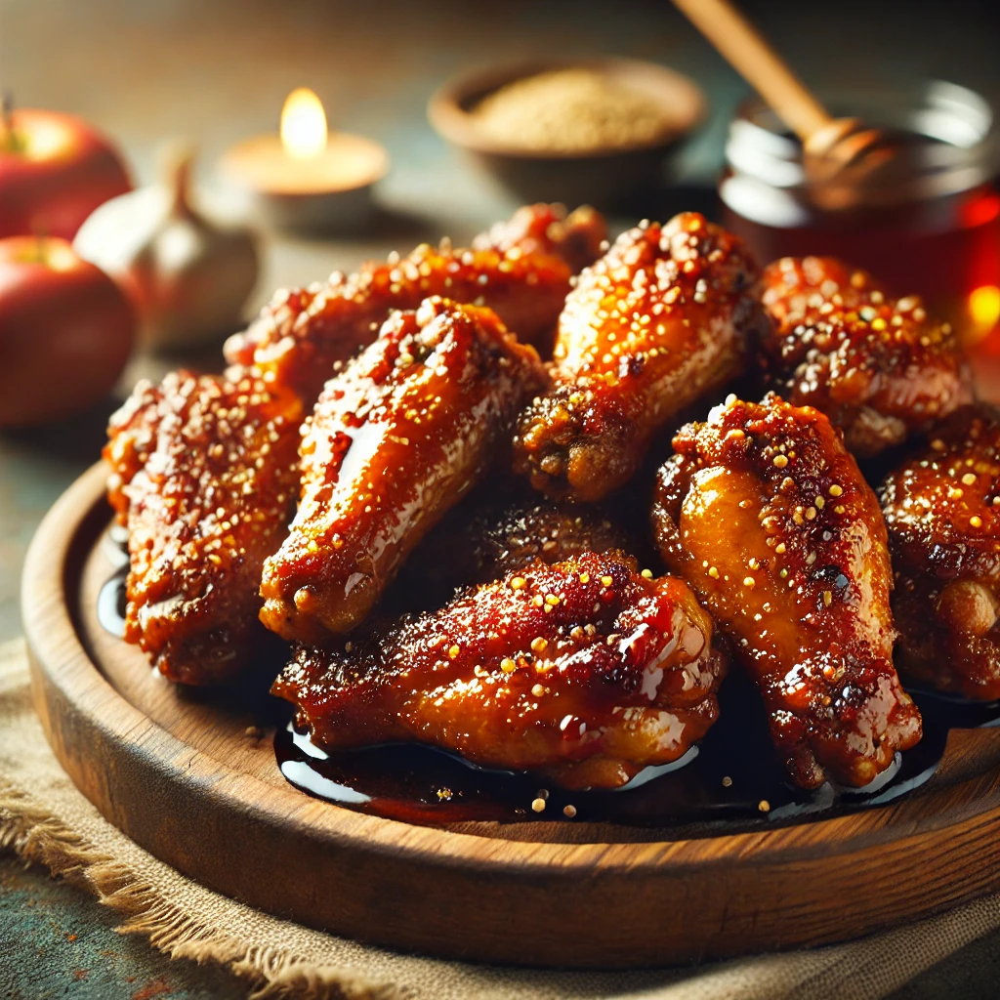

Chicken Wings Adobo
Crispy chicken wings with adobo flavor offer a crunchy exterior and
rich adobo seasoning, ideal for appetizers or main
dishes.
A tantalizing mix of crispy chicken wings with adobo
seasoning offers a golden, crunchy exterior and a burst of tangy, savory
flavor, perfect as an appetizer or main dish.
Savor the irresistible crunch of our crispy chicken wings, perfectly
infused with a bold adobo twist. Each wing is golden-fried to perfection,
offering a mouthwatering balance of savory, tangy spices
and a satisfying crunch in every bite.

Ingredients:
- 2 pounds chicken wing drumettes and flats, patted dry
- 1 ¼ teaspoons kosher salt
- 1/2 teaspoon black pepper
- 1 small (6-ounce) white onion, thinly sliced (about 3/4 cup)
-
1 (2-ounce) garlic head, cloves separated, peeled, and smashed (about
14 garlic cloves)
- 1/3 cup soy sauce (such as Silver Swan)
- 1/3 cup white vinegar (such as Datu Puti)
- 2 tablespoons neutral cooking oil (such as grapeseed oil)
- 2 to 3 dried bay leaves
Instructions:
-
Bring a large pot of water to a boil. Add wings and boil for 5 to 8
minutes. Drain in a colander, run under warm water, then return to the
dry pot. Add vinegar, water, bay leaves, peppercorns, onion, and
jalapeños. Bring to a simmer, then simmer over low heat for 20 minutes.
-
Add soy sauce and simmer for another 10 to 15 minutes, or until the
sauce has reduced by half. Transfer wings to a colander and set aside.
Add whole garlic cloves to the liquid in the pan; simmer until the sauce
has a syrupy consistency and the jalapeños have burst open, releasing
all of their seeds into the reduction.
-
Heat a large nonstick skillet over medium heat. Add chicken wings and
minced garlic. Cook and stir until garlic is tender and wings have
browned, about 10 minutes. Return wings to the sauce to coat before
serving.
-
Add chicken wings to bowl with reduced marinade and toss to coat.
Transfer to a platter and garnish with reserved scallions, cilantro, and
serrano. Sprinkle evenly with fried garlic. Serve immediately alongside
Filipino pico and white rice.